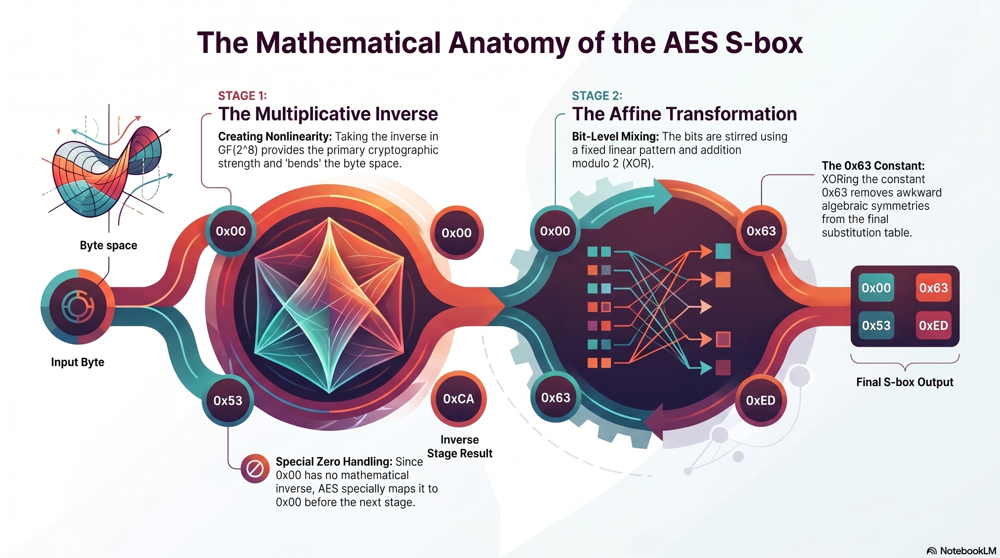

Learning objectives
- Describe the two-stage AES S-box construction: finite-field inverse followed by affine transformation.
- Explain why
S-box(0x00) = 0x63. - Apply the affine formula \(s_i = b_i \oplus b_{(i+4)\bmod 8} \oplus b_{(i+5)\bmod 8} \oplus b_{(i+6)\bmod 8} \oplus b_{(i+7)\bmod 8} \oplus c_i\) to compute each output bit.
- Trace the full mapping
0x53 → 0xCA → 0xED. - Explain why the S-box is a mathematical construction, not an arbitrary table.
Why this tutorial exists
The AES S-box is one of the most important components in AES. It is not merely a random lookup table. It is built from mathematics: first take a multiplicative inverse in \(\mathrm{GF}(2^8)\), then apply an affine transformation to the resulting bits.
Think of the S-box as a two-room workshop. In the first room, the byte is inverted in the finite field. In the second room, the bits are stirred by a fixed linear pattern and then XORed with a constant. The output is the AES substitution byte.
What you should know first
You should understand bytes as polynomials, multiplication in \(\mathrm{GF}(2^8)\), multiplicative inverses, XOR as addition over \(\mathrm{GF}(2)\), and the idea of a function transforming an input into an output.
Symbols used in this tutorial
The affine transformation introduces bit-index notation. We will define it before using it.
| Symbol or notation | Friendly meaning | Technical meaning |
|---|---|---|
| S-box | A substitution box: one byte goes in, one byte comes out. | A nonlinear substitution function used in a block cipher. |
| \(a\) | The original input byte. | An element of \(\mathrm{GF}(2^8)\). |
| \(a^{-1}\) | The finite-field inverse of \(a\). | The byte satisfying \(a\cdot a^{-1}=1\), for \(a\ne0\). |
| \(b_i\) | Bit \(i\) of the inverse byte. | The \(i\)-th bit used as an input to the affine transformation. |
| \(c_i\) | Bit \(i\) of the constant byte. | The \(i\)-th bit of the AES affine constant 0x63. |
| \(s_i\) | Bit \(i\) of the S-box output. | The \(i\)-th output bit after the affine transformation. |
| \(\oplus\) | XOR. | Addition modulo 2. |
| affine transformation | A fixed bit-mixing step followed by XOR with a constant. | A linear transformation plus a constant vector over \(\mathrm{GF}(2)\). |
The big picture
The inverse step gives the S-box its nonlinear bite. The affine step then reshapes the inverse output in a fixed, reversible bit pattern and XORs in the constant 0x63. Together, they create the AES S-box value.
\(a\)
in \(\mathrm{GF}(2^8)\)
over bits
What is an S-box?
An S-box, or substitution box, is a function that replaces input values with output values according to a rule or table. AES uses an 8-bit S-box: each input byte maps to one output byte.
Since one byte has 256 possible values, the AES S-box contains 256 substitutions. For example:
| Input byte | AES S-box output |
|---|---|
0x00 | 0x63 |
0x53 | 0xED |
0x7C | 0x10 |
Stage 1: take the finite-field inverse
For a nonzero input byte \(a\), AES first computes \(a^{-1}\) in \(\mathrm{GF}(2^8)\):
The zero byte has no inverse, so AES treats it specially: the inverse step maps 0x00 to 0x00 before applying the affine transformation.
AES does not claim that 0x00 has an inverse. It defines the inverse step for 0x00 as 0x00 so the S-box can still map every possible byte.
Stage 2: apply the affine transformation
After inversion, AES applies a fixed bit-level transformation. This transformation uses XORs of selected bits from the inverse byte, then XORs a constant bit from 0x63.
An affine transformation is a linear transformation followed by adding a constant. In AES, “adding” means XORing because the bits live in \(\mathrm{GF}(2)\).
AES can define the affine transformation bit-by-bit as:
Here:
- \(b_i\) is bit \(i\) of the inverse byte.
- \(s_i\) is bit \(i\) of the output byte.
- \(c_i\) is bit \(i\) of the constant byte
0x63. - The \(\bmod8\) part means the bit positions wrap around from 7 back to 0.
AES descriptions often index bits from least significant bit to most significant bit. In this tutorial, bit 0 means the least significant bit, the \(1\) place; bit 7 means the most significant bit, the \(x^7\) place.
The affine constant: 0x63
The constant byte used in the AES affine transformation is:
If we list bits from bit 7 down to bit 0, it looks like this:
| Bit position | 7 | 6 | 5 | 4 | 3 | 2 | 1 | 0 |
|---|---|---|---|---|---|---|---|---|
| Bit value | 0 | 1 | 1 | 0 | 0 | 0 | 1 | 1 |
If we list bits from bit 0 up to bit 7, which is convenient for the formula, the same byte is:
| Bit position | 0 | 1 | 2 | 3 | 4 | 5 | 6 | 7 |
|---|---|---|---|---|---|---|---|---|
| \(c_i\) | 1 | 1 | 0 | 0 | 0 | 1 | 1 | 0 |
Worked example 1: why S-box(0x00) = 0x63
The zero byte has no multiplicative inverse, so AES uses 0x00 as the result of the inverse step for this special case.
0x000x000x63Since all inverse bits \(b_i\) are 0, the affine formula becomes:
Therefore the output byte is just the affine constant:
Worked example 2: overview of S-box(0x53) = 0xED
This is a famous AES example. The finite-field inverse of 0x53 is 0xCA. Then the affine transformation maps 0xCA to 0xED.
0x530xCA0xEDWorked example 3: affine bits for 0xCA
Write 0xCA in binary:
Listed from bit 0 to bit 7, this is:
| Bit position | 0 | 1 | 2 | 3 | 4 | 5 | 6 | 7 |
|---|---|---|---|---|---|---|---|---|
| \(b_i\) | 0 | 1 | 0 | 1 | 0 | 0 | 1 | 1 |
Use the affine formula:
| Output bit | Calculation | Result |
|---|---|---|
| \(s_0\) | \(b_0\oplus b_4\oplus b_5\oplus b_6\oplus b_7\oplus c_0=0\oplus0\oplus0\oplus1\oplus1\oplus1\) | 1 |
| \(s_1\) | \(b_1\oplus b_5\oplus b_6\oplus b_7\oplus b_0\oplus c_1=1\oplus0\oplus1\oplus1\oplus0\oplus1\) | 0 |
| \(s_2\) | \(b_2\oplus b_6\oplus b_7\oplus b_0\oplus b_1\oplus c_2=0\oplus1\oplus1\oplus0\oplus1\oplus0\) | 1 |
| \(s_3\) | \(b_3\oplus b_7\oplus b_0\oplus b_1\oplus b_2\oplus c_3=1\oplus1\oplus0\oplus1\oplus0\oplus0\) | 1 |
| \(s_4\) | \(b_4\oplus b_0\oplus b_1\oplus b_2\oplus b_3\oplus c_4=0\oplus0\oplus1\oplus0\oplus1\oplus0\) | 0 |
| \(s_5\) | \(b_5\oplus b_1\oplus b_2\oplus b_3\oplus b_4\oplus c_5=0\oplus1\oplus0\oplus1\oplus0\oplus1\) | 1 |
| \(s_6\) | \(b_6\oplus b_2\oplus b_3\oplus b_4\oplus b_5\oplus c_6=1\oplus0\oplus1\oplus0\oplus0\oplus1\) | 1 |
| \(s_7\) | \(b_7\oplus b_3\oplus b_4\oplus b_5\oplus b_6\oplus c_7=1\oplus1\oplus0\oplus0\oplus1\oplus0\) | 1 |
From bit 0 to bit 7, the output bits are:
Rewriting as the usual byte display from bit 7 down to bit 0:
Matrix view of the affine transformation
The bit formula can also be written as a matrix equation over \(\mathrm{GF}(2)\):
In this notation:
- \(b\) is the inverse byte written as an 8-bit column vector.
- \(A\) is a fixed 8 by 8 binary matrix.
- \(c\) is the constant vector from
0x63. - Addition is XOR.
The bit formula is easier to compute by hand. The matrix form is useful because it shows that the affine step is a structured linear bit transformation plus a constant.
Why does AES add the affine transformation?
The inverse operation gives strong nonlinearity, but the affine transformation improves the structure of the S-box. It helps avoid undesirable fixed patterns and gives the S-box better cryptographic behavior.
The inverse step bends the byte space. The affine step rotates and offsets that bent space so the final table has fewer awkward symmetries. It is not random decoration; it is purposeful finishing work.
The S-box can be a table, but it is not arbitrary
Implementations often store the AES S-box as a 256-entry lookup table for speed. But mathematically, each table entry comes from the same two-stage rule:
A lookup table can store the answers, but the AES S-box is defined by a mathematical construction.
Interactive: AES S-box step-through
Enter any byte and step through both stages — the finite-field inverse and the affine transformation bit by bit — to see exactly how the S-box output is built.
Common mistakes
The inverse step is only stage 1. AES also applies the affine transformation.
0x00
0x00 has no multiplicative inverse, so AES maps it to 0x00 for the inverse step before applying the affine transformation.
The affine formula often uses bit 0 as the least significant bit. Be careful when converting between formula order and normal binary display order.
The affine transformation uses XOR over bits, not decimal addition.
Practice problems
-
What are the two major stages of the AES S-box construction?
Show solution
First, compute the multiplicative inverse in \(\mathrm{GF}(2^8)\). Second, apply the affine transformation.
-
Why does
S-box(0x00)equal0x63?Show solution
AES handles
0x00by using0x00as the inverse-step output. Since all input bits to the affine transformation are 0, the output becomes the constant0x63. -
If the inverse of
0x53is0xCA, why is the AES S-box output0xEDinstead of0xCA?Show solution
Because AES applies the affine transformation after taking the inverse.
0xCAis the inverse;0xEDis the final affine-transformed S-box output. -
In the affine formula, what does \(\oplus\) mean?
Show solution
\(\oplus\) means XOR, which is addition modulo 2.
-
What does the constant
0x63do in the affine transformation?Show solution
It is the constant vector XORed into the result of the linear bit transformation.
Why this matters for cryptography
The AES S-box is a carefully designed nonlinear substitution layer. It is one of the main sources of confusion and diffusion when AES rounds are repeated.
- The inverse step gives strong nonlinearity.
- The affine step removes some undesirable algebraic patterns.
- The S-box maps every byte to exactly one byte.
- The S-box is invertible, which AES needs for decryption.
- The table can be stored, but the design is mathematical rather than arbitrary.
One-page recap
- The AES S-box maps one input byte to one output byte.
- It has 256 possible input values and 256 output values.
- Stage 1 is the multiplicative inverse in \(\mathrm{GF}(2^8)\).
0x00has no inverse, so AES handles it specially by using0x00for the inverse step.- Stage 2 is an affine transformation.
- An affine transformation is a linear transformation plus a constant.
- In AES, the affine constant is
0x63. - The affine step uses XOR, not ordinary addition.
S-box(0x00) = 0x63.0x53inverses to0xCA, then affines to0xED.
| Input | Inverse step | Affine step | S-box output |
|---|---|---|---|
0x00 | 0x00 | Affine with 0x63 | 0x63 |
0x53 | 0xCA | Affine transformation | 0xED |
This formula is applied to each bit position \(i\), from 0 through 7.
Module Infographic
This visual overview captures the key ideas from this module. Save it or print it as a reference sheet.

What comes next
The next tutorial should be Inverse S-box and Reversibility. Since AES must decrypt as well as encrypt, we need to understand how the S-box can be reversed.